This guide will walk you through deploying the Neural Activity Visualizer AngularJS component. We shall develop a very simple web page that will allow us to visualize electrophysiology data files in any format supported by the Neo library. You can then expand on this page to suit your needs. We shall also demonstrate how you can deploy this app on a web server.
Using the Neural Activity Visualizer Angular component
Step 1:
Create a new directory. Here, I am creating one named 'NeoViewer':
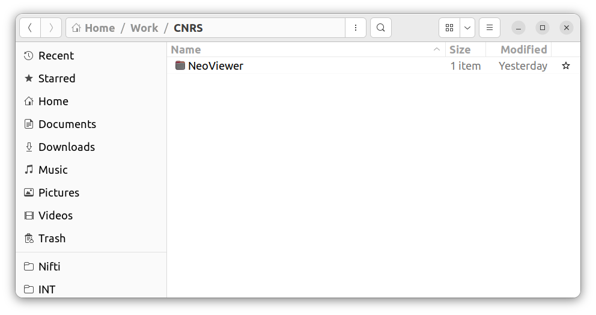
Step 2:
Inside this directory create a new file named 'index.html':
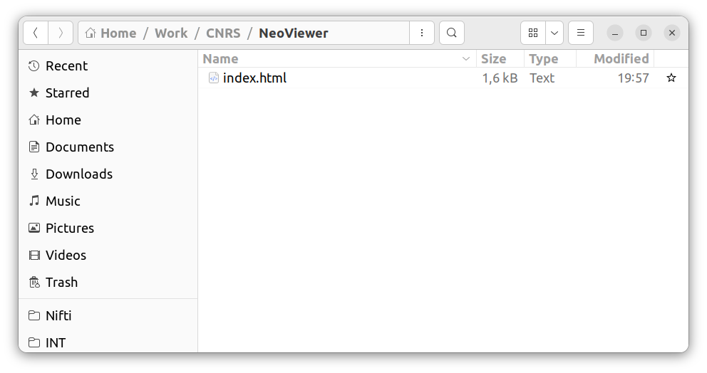
Step 3:
Copy-paste the following code into the 'index.html' file:
<!DOCTYPE html>
<html lang="en">
<head>
<link rel="stylesheet" href="https://maxcdn.bootstrapcdn.com/bootstrap/3.3.7/css/bootstrap.min.css">
<script type="text/javascript" src="https://cdnjs.cloudflare.com/ajax/libs/angular.js/1.7.5/angular.min.js"></script>
<script type="text/javascript" src="https://cdnjs.cloudflare.com/ajax/libs/angular.js/1.7.5/angular-resource.min.js"></script>
<script type="text/javascript" src="https://cdnjs.cloudflare.com/ajax/libs/angular-nvd3/1.0.9/angular-nvd3.min.js"></script>
<script type="text/javascript" src="https://cdnjs.cloudflare.com/ajax/libs/plotly.js/1.51.1/plotly.min.js"></script>
<script type="text/javascript" src="https://cdn.jsdelivr.net/gh/NeuralEnsemble/neo-viewer@master/js/angularjs/src/visualizer.js"></script>
<script type="text/javascript" src="https://cdn.jsdelivr.net/gh/NeuralEnsemble/neo-viewer@master/js/angularjs/src/services.js"></script>
</head>
<body>
<div id="root">
<div class="container" ng-app="neo-visualizer">
<div ng-controller="URLFormController">
<br />
<form class="form-inline angular-container">
<div class="form-group">
<label for="dataFileURL">URL of data file:</label>
<input type="text" class="form-control" ng-model="dataFileURL" id="dataFileURL"
placeholder="enter data file URL here" style="width: 600px;">
</div>
</form>
<br /><br />
<div class="row angular-container">
<visualizer-view ng-if="dataFileURL" source="{{dataFileURL}}" height=300>
</visualizer-view>
</div>
</div>
</div>
</div>
</body>
</html> Step 4:
Your visualizer is ready! You can now open the 'index.html' file in your web browser. You will see something like this:
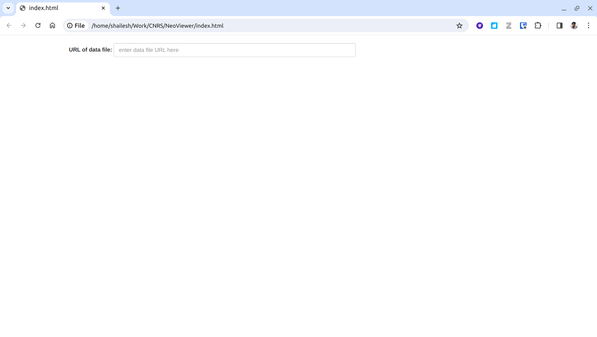
Step 5:
You can paste a URL of a data file in the input box. Here is an example URL we will use:
The visualizer will load and display the metadata contained in the file: 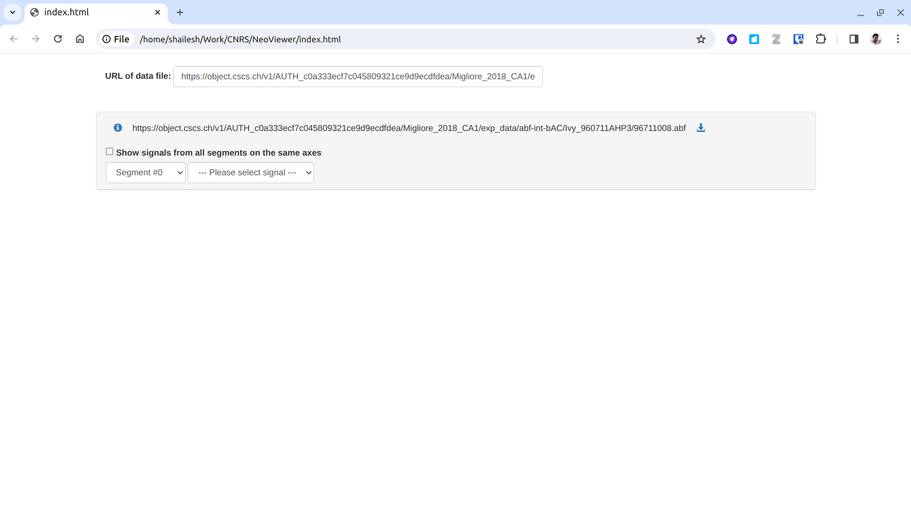
https://object.cscs.ch/v1/AUTH_c0a333ecf7c045809321ce9d9ecdfdea/Migliore_2018_CA1/exp_data/abf-int-bAC/Ivy_960711AHP3/96711008.abf
The visualizer will load and display the metadata contained in the file: 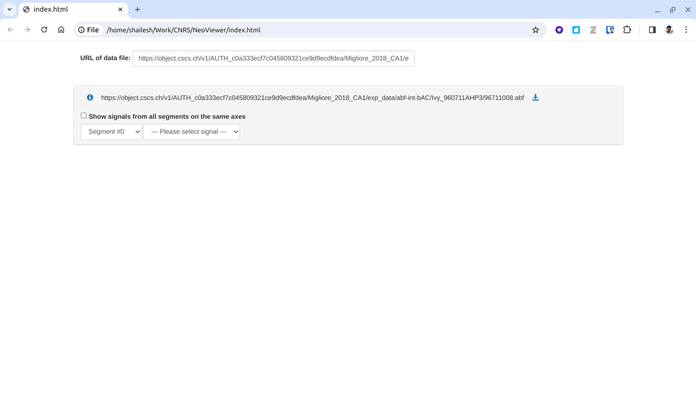
Step 6:
You can select the signal of interest, and the visualizer will display the signal:
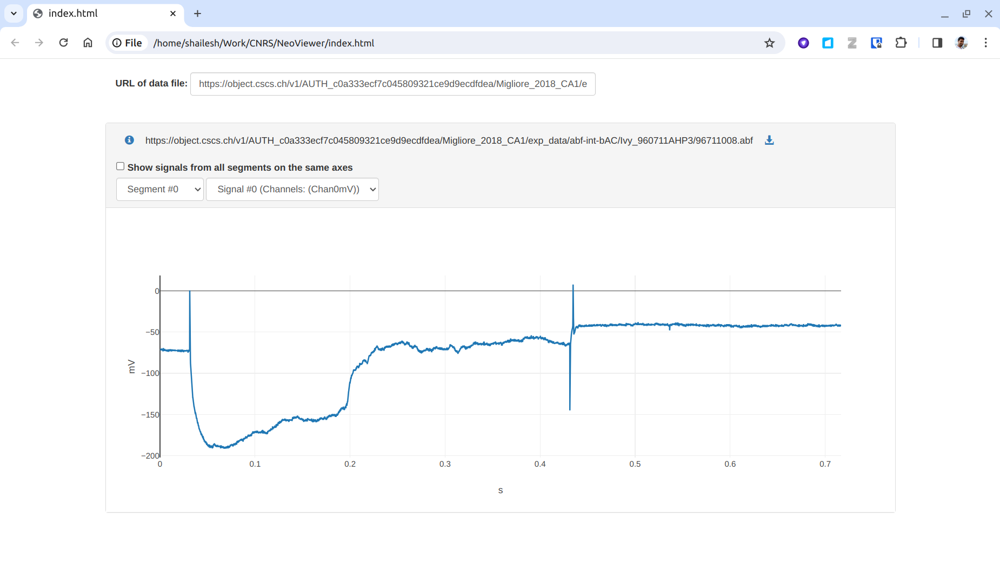
Step 7:
Next we shall see how we can deploy this app on a web server. For this example, we shall deploy it on a website called Netlify. If you don't already have an account, you can create one for free here. It is very easy to create an account, and you can sign up using your GitHub account. Click on the 'Log in' button as shown below:

Step 8:
Login to Netlify with your GitHub account:
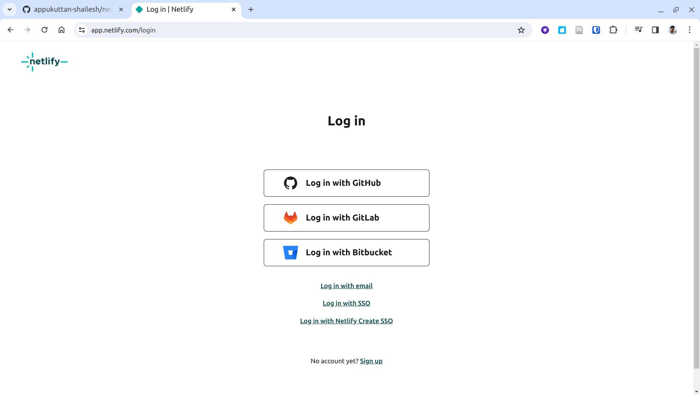
Step 9:
On logging in you will see your account's overview page. Click on the 'Add new site' button on the middle of the page:
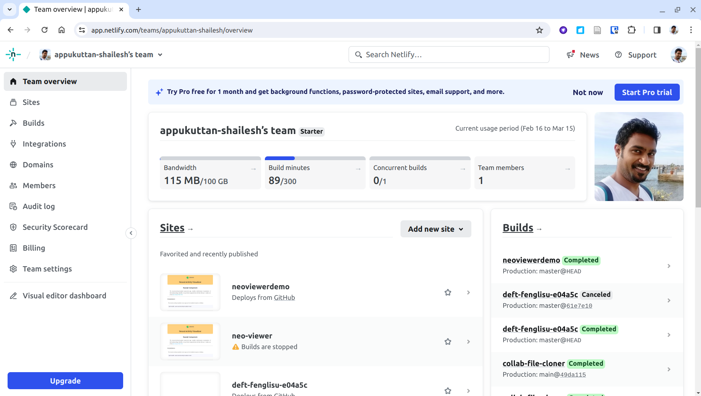
Step 10:
This will show you a few methods for adding a new site. Click on 'Deploy manually' from the drop-down list:
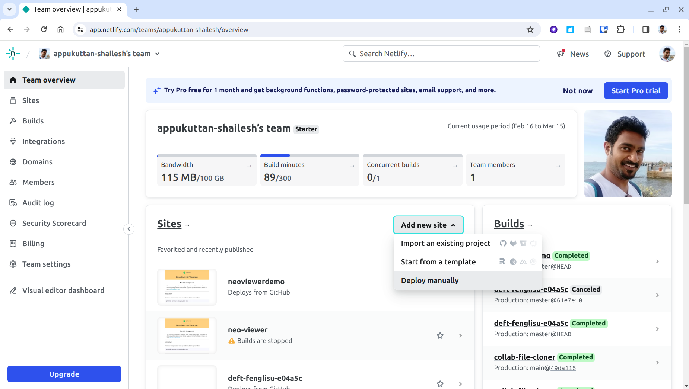
Step 11:
This will bring you to the page shown below. This allows you to drag and drop your project folder to upload your project folder. Drag and drop your 'NeoViewer' folder (created in step 1) here:
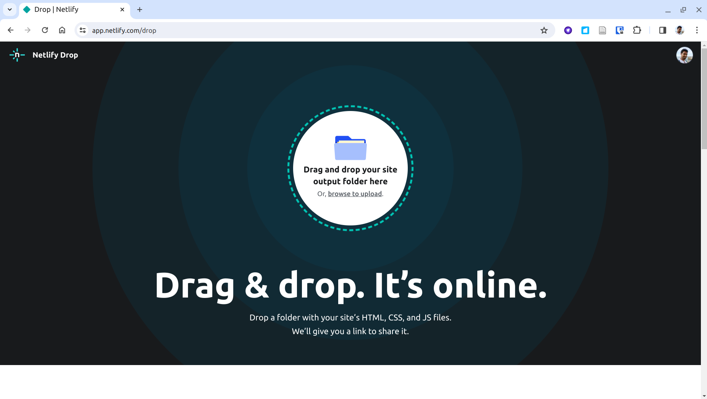
Step 12:
On dropping the folder you will see the data being uploaded:
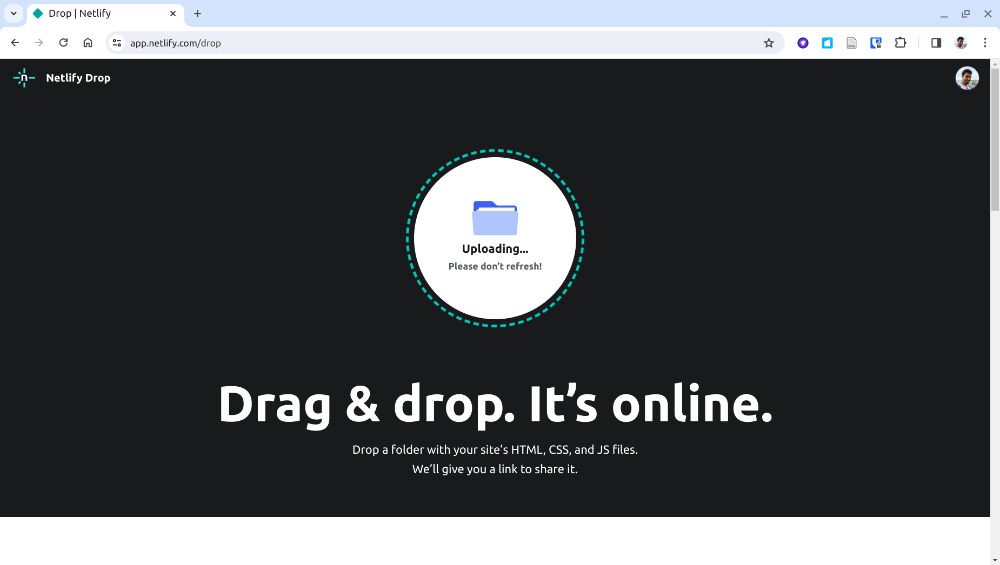
Step 13:
Once the deployment is complete, you will see the following page:
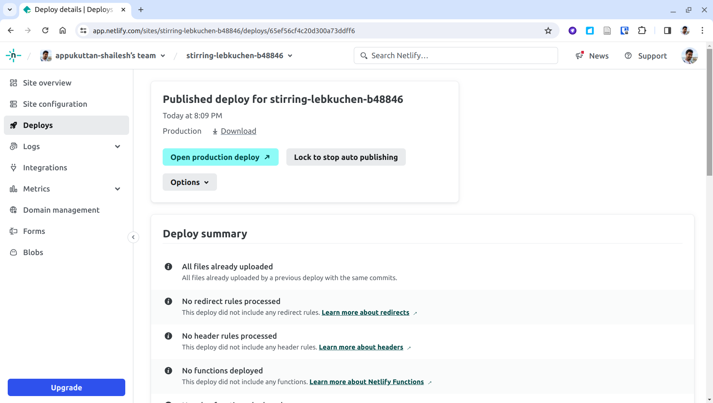
Step 14:
Click on the 'Site Overview' button to see more info about your site. You can find the deployed URL here. Note that netlify assigns a random name to your site, and the URL is based on this name. You can change this name later; we shall see this in step 16. Click on the URL.
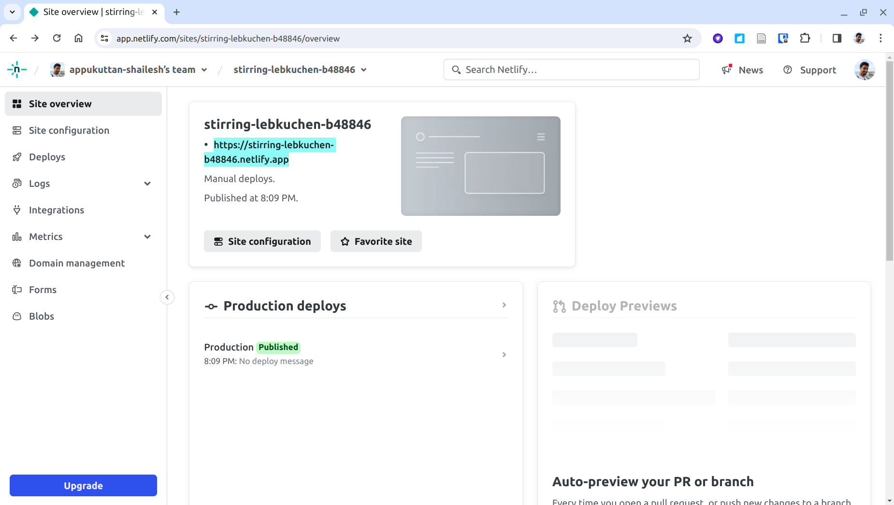
Step 15:
We see the familiar page for using the visualizer that we had seen in step 4 above. Moreover, now this page is live on the internet!
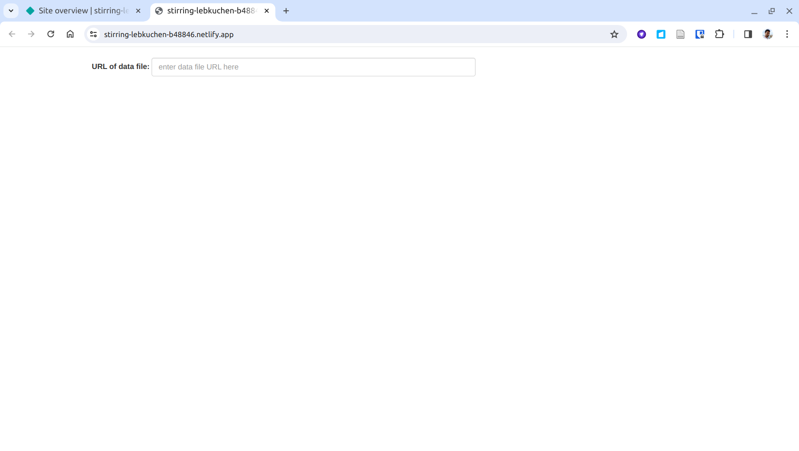
Step 16:
You can change the name of your site, and thereby its URL, by clicking on the 'Site configuration' button on the menu located on the left of the page. You can then change the name of your site by clicking on the 'Change site name' button:
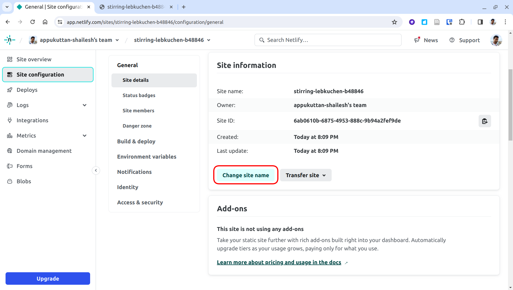
You can share this URL with anyone and they can use the visualizer. You can also use this URL to embed the visualizer in another website.
This project has received funding from the European Union’s Horizon 2020 Framework Programme for Research and Innovation under the Specific Grant Agreements No. 785907 and No. 945539 (Human Brain Project SGA2 and SGA3).
If you encounter any problems, please let us know.